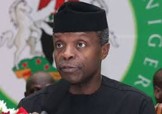

Tiwa Savage, Yemi Alade fight dirty over their buttocks sizes

Two of the biggest female African music stars Yemi Alade and Tiwa Salvage, have started a fight on social media over the size of their buttocks. Yemi Alade started the fight when she took to her Twitter handle to throw shots at an unnamed person who according to her has been photoshopping her bum to deceive her fans on social media. She warned the person to stop deceing people and accept the fact that she has nothing behind. She wrote, “Stop increasing your ynash (buttocks) in your pictures. You know you are straight like ‘I’. Embrace your real self! Ahh ahh. Deceiving fans up and dan(down).” However, Tiwa thought the message was directed at her and wasted no time to react. The Mavin First Lady first took to her Instagram Stories to write, “Don’t start a war you cannot finish.
N30,000 minimum wage: Labour finally declares prolonged strikePrevious governments were corrupt – Osinbajo

The organized labour has asked workers to fully mobilize for a prolonged national strike. The labour Union came to this conclusion due to the inability of the government to commence the process of implementing the N30,000 new minimum wage. The decision also came against the backdrop of Nigeria Governors’ Forum, NGF, rejection of the proposed new minimum wage of N30,000. The organized labour conveyed its position in a New Year message by the President of Nigeria Labour Congress, NLC, Ayuba Wabba. The lengthy statement reads, “Government’s dilly-dallying on the issue has strained government-labour relations with a potential for a major national strike which could just be days away. “Accordingly, we would use this opportunity to appeal to the government to do the needful by urgently transmitting the bill on the new national minimum wage to the National Assembly. ”We also would like to use this opportunity to urge workers to fully mobilize for a prolonged national strike and enforce their right. “This strike becomes the inevitable last option for us and we crave the understanding and support of all Nigerians and businesses. “We would want to assure workers that their labour, patience and diligence will not be in vain and that this leadership remains committed to giving all it takes to ensure that they get just and fair wages due to them in a decent work environment appropriate to their well-being. “This leadership is similarly committed to ensuring there is social protection for workers. “In the year that is ahead of us, the Nigeria Labour Congress remains unequivocally committed to national and workers’ goals. “It saluted the contribution and sacrifice of the entire workforce, great men and women, saying: “We use this occasion to reach out to all workers, pensioners and other citizens in Nigeria and elsewhere with the message of love, joy, hope and goodwill. “This day is an opportunity for celebration and stock-taking. Pursuant to this, our reflections on the year 2018 are both positive and negative. “Throughout 2018, the NLC completely invested in the struggle to protect workers interests, promote democratic values, advocate the rule of law and defend human cum trade union rights. We sustained our fight against anti-labour practices at the work place and insisted on the observance of the rules of decent work and fair wages. “We kicked against the rising incidence of unemployment, especially, youth unemployment and the danger it portends. We canvassed the preservation of existing jobs and creation of new sustainable ones through alternative policy options with potential for expanding the economy. “Aside from the regular commemoration of May Day, the year was remarkable and memorable for the observance and celebration of Congress’ 40th anniversary. Many of our affiliates were to follow suit. “One of the major activities in the year was the renewed strengthening of our relationship with our civil society allies through regular collaboration and mutual engagement. “Congress remained vigilant and responsive to national issues as they unfolded and frequently made its position known through press statements, comments, communiques, state of the nation comments, etc which relatively influenced policy and legislation. “Congress, for instance, always condemned prevalent violence in some parts of the country and called on government to bring this to an end. “Congress sustained its robust engagement with the National Assembly, especially on issues of concern to Labour or great national importance. “At the international level, the year remains one of the most remarkable through deepened interactions, engagements, programmes and activities, culminating in the election of the President of the Congress to the headship of ITUC Global. “In spite of these relative successes, the year remains one of the most traumatic for workers, especially given the failure of government to enact and implement the new national minimum wage of N30,000. “This is in spite of the unimpeachable tripartite process leading to the agreement by the social partners on the new national minimum wage. It is unfortunate that the Federal Government is yet to transmit to the National Assembly an executive bill for the enactment of N30,000 as the new national minimum wage.’’ On campaign for industrialization, labour said: “We will work assiduously to promote and advocate the removal of all barriers to industrialization, growth and productivity. We should be able to build a country where we produce what we consume. “We cannot continue to export precious jobs away to other countries through successive poor policy choices of government and expect to change our unfortunate status as the poverty capital of the world. “In 2018, government at different levels in Nigeria tried to use the “No Work… No Pay” to hound and victimize workers. This policy actually arises from clear violation of Collective Bargaining Agreement by the same government that seeks to use the policy against workers. “The fact is that the obnoxious policy of “No Work… No Pay” is derived from Decree 54 of 1977 which even military regimes that promulgated it refrained from deploying against workers. It is unfortunate that such cruel policy is being used against workers by a democratic government. “There is no place in modern industrial relations for workers to be owed arrears of salaries. A case in hand is the recent shutdown of the government of the United States owing to disagreements between the executive and the legislative arms of government over budget issues. “Most workers whose salaries were affected by the budget impasse were asked to proceed on leave until government is able to pay their salaries. “In worker-sensitive climes, even our West African neighbours, it is unthinkable that workers would go home in a month without their salaries. We have tolerated this evil culture of prolonged salary indebtedness for a long time and government has taken advantage of our patience to extend the frontiers of this impunity to the policy dump site of “No Work… No Pay”. “The Nigeria Labour Congress will continue to resist such unjust, draconian and insensitive policy and insist that workers’ salaries, pension and gratuity must be paid as when due. ”In furtherance to this, the Nigeria Labour Congress will intensify the struggle for regular, predictable and appropriate payment of salaries, pension and gratuity. This struggle will continue to be our topmost priority. “In 2018 and the years preceding it, we demonstrated our commitment in this regard with rallies in defaulting states. We also demanded the probe of governors of such states. “We went further to call on the federal government to make subsequent release of further bail-out funds or Paris Club refund contingent on clear evidence of judicious use (for payment of salaries, pensions and gratuities) of previous releases. We will continue to insist on accountability. “Furthermore, the NLC will continue to promote worker-education and mobilization through Congress education programmes and other union training programmes. These activities would be religiously held with the objective of positive impact on workers. “Therefore, we urge government at all levels to consider workers as assets and partners in development rather than liabilities.” Subscribe to Daily Post. Advertise with us. Send us enquiries, press releases..
Previous governments were corrupt – Osinbajo
The Vice President, Prof. Yemi Osinbajo, on Saturday restated that the Federal Government had achieved a lot in all sectors of human development and democratic process. The News Agency of Nigeria (NAN) reports that Osinbajo spoke at the 2017/2018 Barewa Old Boys Association annual lecture in Sokoto. “There is a lot of impunity that have been defined to public office in Nigeria, especially grand corruption which had been sanctioned under the present administration. “I said grand corruption because our society had a problem of extended corruption affecting all government institutions and today has never been the case. “Nigeria had in the past faced so much challenges of corruption in public offices with a lot of government money being stolen by individuals which the present administration blocked such instances,” he said. Osinbajo added that the present administration under the leadership of President Muhammadu Buhari had recorded tremendous success in the areas of security, agriculture, judiciary, legislature, among others.